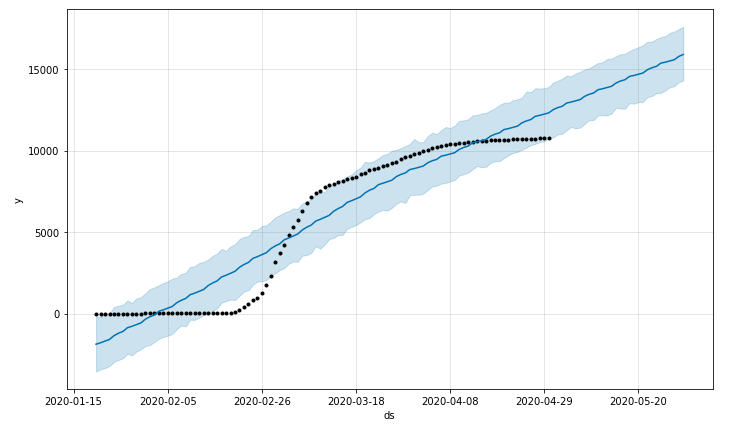
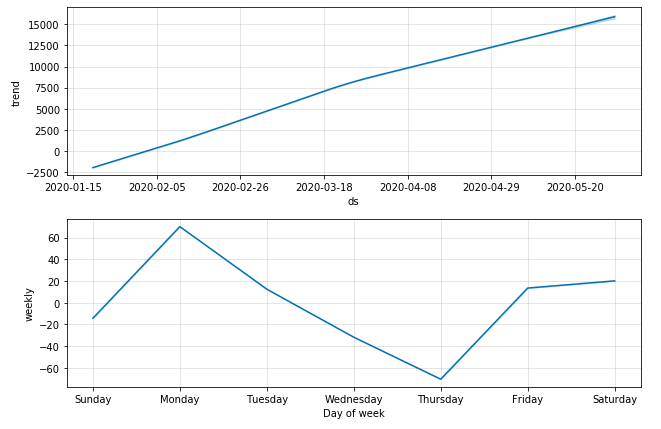
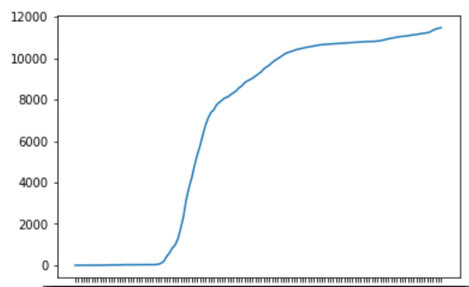
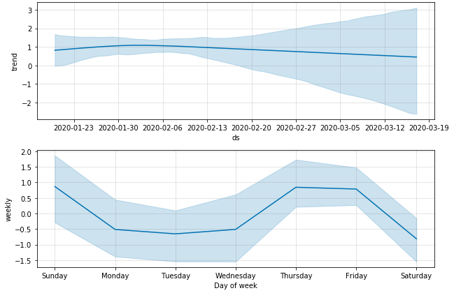
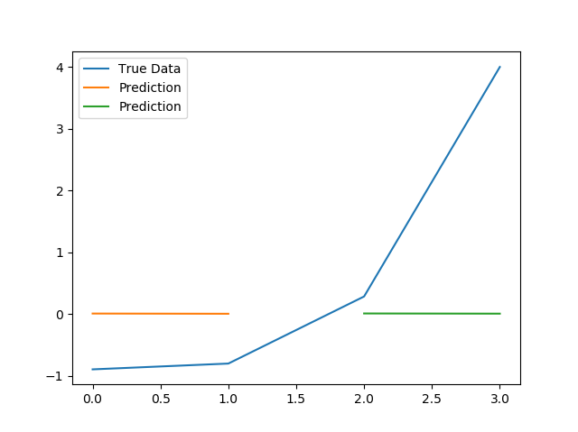
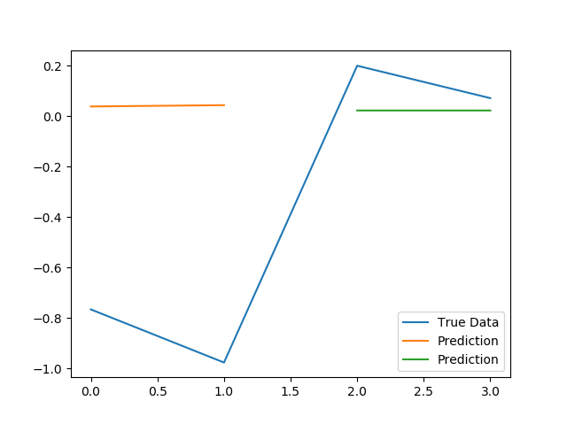
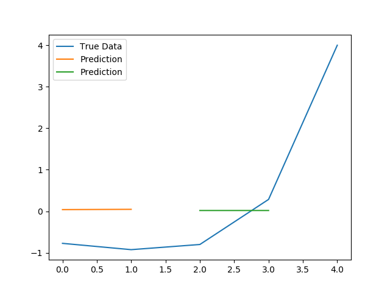
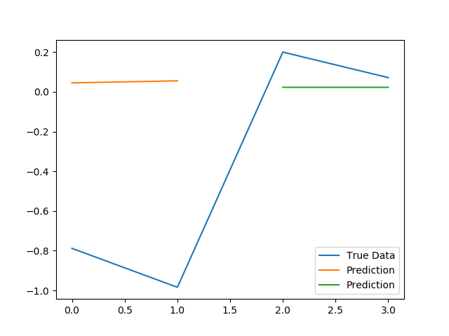
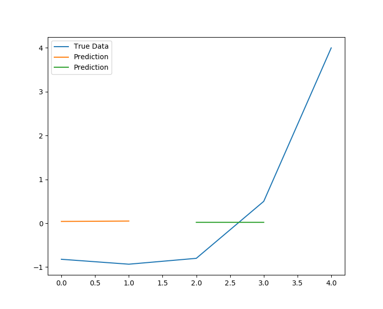
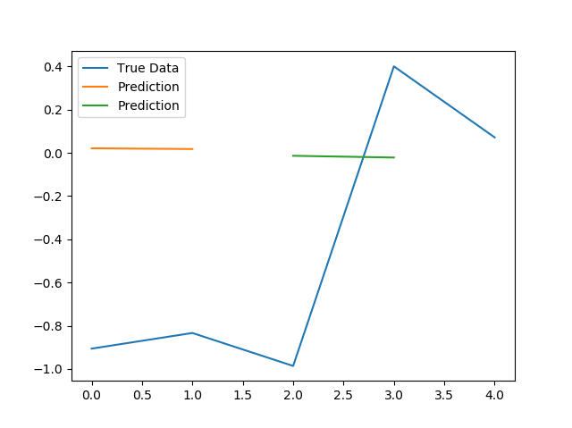

코로나웹페이지
데이터 출처 : KT, 과학기술정보통신부, 중앙방역대책본부, DACON
대표적으로 COVID-19와 관련하여 현재까지 우리가 이미 알고 있는 것
COVID-19가 퍼지기 시작하면서 전세계적으로 대유행하고 있는 현재까지 중요한 요인은 두가지다.- 나이 : 나이가 많은 사람이 사망률이 현저히 높음
- 기저질환 : 기저질환자는 COVID-19로 인한 사망률이 높음
위 요인들과 관련된 데이터 분석이 아닌 다방면에서 분석을 수행하고자 공공데이터 또는 외부데이터와의 결합을 고려한다.
1. Prophet
DACON에서 제공하는 데이터를 활용하여 1월~4월까지의 확진자 데이터를 통해 그 이후 한달간의 확진자 추세 예측
Prophet는 페이스북에서 개발한 시계열 예측 패키지이다. ARIMA와 같은 확률론적이고 이론적인 모형이 아니라
몇가지 경험적 규칙(heuristic rule)을 사용하는 단순 회귀모형이지만 단기적 예측에서는 큰 문제 없이 사용할 수 있어 짧은 시일내에 다양한 변수가 있는 코로나 데이터에 적응하였다.
A. 2020년 5월 확진자 추세 예측
 우측 상단의 그래프를 통해 전체 경향성을 파악하고, 하단의 그래프를 통해 전체 데이터를 통한 요일별 증감을 표출한다.
위 그래프는 5월까지 실제 확진자의 그래프이다.
결론, 실제로 주말이후 월요일에 확진자수가 증가함을 확인하였으며, 경향성 그래프도 실제와 유사함이 확인 가능하다. 또한 실제 확진자 그래프도 추세 예측 그래프의 오차 범위 내에 있음을 확인 할 수 있다.
B. 신천지 집단감염 사례가 발생하지 않았을 경우 예측
신천지 집단감염 사례 전까지의 데이터 수가 매우 적고 경향성을 보인다고 판단하기 어려워서 불확실성을 추가하였다.
그 결과 뚜렷한 증가나 감소가 보이지 않고 아주 미세하게 감소하는 추세로 예측할 수 있다.
결론, 신천지 집단감염이 발생하지 않았을 경우 오차 범위 내에서 COVID-19가 종식될 가능성이 있었다. 하지만 데이터수가 너무 적고 오차범위가 커서 확실한 결론을 내릴 수 없다.
2. Logistic regression & Linear regression
A. 한국, 미국, 중국, 이탈리아 확진자 수 예측
로지스틱 함수와 선형회귀 분석을 통해서 4개의 대표 국가의 확진자 수 예측

중국과 한국은 소강 상태로 보이며, 이탈리아와 미국은 확산이 진행중이다.
결론, 중국과 한국은 로지스틱 그래프와 수렴해가는 모습이 관찰됨. 선형회귀식의 기울기 또한 낮아지고 있으므로 코로나 종식에 가까워짐
B. 신천지 집단감염 사례 전과 후 예측


위 그래프의 로지스틱 그래프와 선형분석 그래프 모두 Prophet에서 분석한 바와 같이 코로나사태가 소강상태에 수렴할것으로 예측한다.
2월 17일 신천지 집단감염 사례 이후 선형회귀식과 로지스틱 그래프 모두 뚫는 수준의 기울기를 보임
COVID-19의 대규모 집단 감염의 위험성을 관찰할 수 있음
3. LSTM
KT가 제공하는 해외 로밍 이용객 통계정보와 전 세계의 감염병과 관련된 뉴스 정보를 활용하였다.
로밍데이터와 뉴스데이터의 전처리 과정을 통하여 COVID-19 관련 기사 게시일자와 로밍데이터의 출국일자와의 차이를 활용하여 유효 데이터를 정의한다.
- 뉴스데이터의 제목에 나라이름이 포함된 경우
- 해당 나라의 ISO코드와 로밍데이터의 국가코드가 같은 경우
- 뉴스데이터 게시일자와 로밍데이터의 출국일자와의 차이가 유효한 경우
위 조건에 따라 데이터전처리 진행하면 범위가 3이내 일 경우 337개, 7이내 일 경우 680개, 10이내 일 경우 약 1000개이다.
날짜별 합계를 계산하여 행 갯수를 구하면 모두 100개 이내의 데이터이다.
아래 분석 결과는 LSTM모델을 적용한것이다. 하지만 데이터 갯수가 현저히 적어 데이터 분석 결과, 의미가 매우 낮다.
유효 데이터 범위가 3이내 일 경우
 유효 데이터 범위가 7이내 일 경우
 유효 데이터 범위가 10이내 일 경우
 유효 범위가 10일이고 sequence length가 3일때의 결과값이 가장 높은 점수를 가진다.